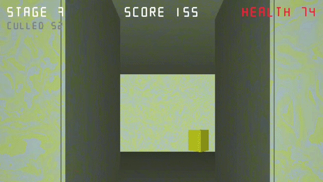
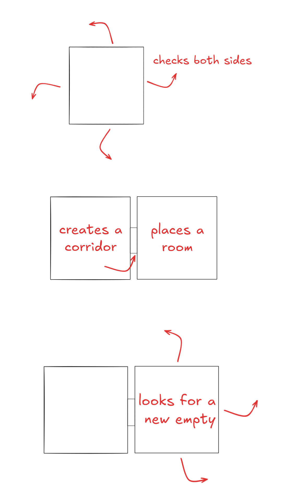

"adwq" is an acronym formed from four random, adjacent letters; it doesn't represent anything. The primary inspiration for this project was the FPS game `.kkrieger` by .theprodukkt. However, my goal wasn't just to create a small-footprint FPS. I also began researching how lightweight systems like this could be used for game optimization. This project marks my first real engagement with procedural systems. Turning potentially infinite sequences of numbers into meaningful, coherent wholes has been one of the most enjoyable tasks I've undertaken to date.

A gameplay moment showing how procedural room generation and combat mechanics come together.
What did I use?
This game can be described as a from-scratch OpenGL project, primarily utilizing the GLFW, GLM, and GLAD libraries. Developed without any game engine or design tools, shapes were constructed using vector data, and rooms were generated using RNG systems.
What was my approach?
To generate rooms, I first defined a target room count. I treated each room as a node, checking the periphery of the previous node to place the next one to the north, south, east, or west, thereby forming a corridor. Once these checks were complete and the desired number of rooms was reached, I populated them with pre-defined enemies.

A rough visual representation of the algorithm.
What challenges did I face?
Since I wasn't using a game engine, even calculating the normal vectors for every generated object was a significant problem. Integrating the node-and-check system for rooms and the subsequent corridor formation was another challenge. The lack of vital features provided by modern game engines—such as text rendering, menu creation, camera movement, and collider systems—were some of the factors that made this project particularly difficult. Nevertheless, in the end, I succeeded in creating a product that I managed to shrink down to just 181KB in a zip package.
Final Verdict
I was so captivated by the magical nature of procedural structures that I might have done this project an injustice by overlooking how much could be learned even from such a small-scale endeavor. Therefore, even as I write this, I am reminded again and again of how much I learned. I can say it was one of the most educational, enjoyable, and challenging projects I've worked on.